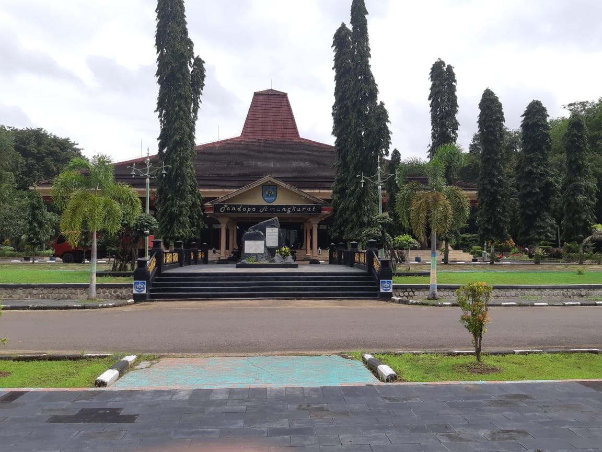

Home
Selamat Datang di Website Pemerintahan Kabupaten Tegal
Kabupaten Tegal, adalah salah satu kabupaten di Provinsi Jawa Tengah. Ibukotanya adalah Slawi, sekitar 14 km sebelah selatan Kota Tegal. Kabupaten ini berbatasan dengan Kota Tegal dan Laut Jawa di utara, Kabupaten Pemalang di timur, Kabupaten Banyumas di selatan, serta Kabupaten Brebes di selatan dan barat. Bagian utara wilayah Kabupaten Tegal merupakan dataran rendah. Di sebelah selatan merupakan pegunungan, dengan puncaknya Gunung Slamet (3.428 meter), gunung tertinggi di Jawa Tengah. Di perbatasan dengan Kabupaten Pemalang, terdapat rangkaian perbukitan yang tidak terlalu terjal. Di antara sungai besar yang mengalir adalah Kali Gung dan Kali Erang, keduanya bermata air di hulu Gunung Slamet. Kabupaten Tegal terdiri atas 18 kecamatan, yang dibagi lagi atas sejumlah desa dan kelurahan. Pusat pemerintahan berada di Kecamatan Slawi. Slawi dulunya merupakan kota kecamatan, yang kemudian dikembangkan menjadi ibukota kabupaten yang sebelumnya berada di Kota Tegal.
Sejarah Tegal
Kekayaan sejarah sebuah kota atau kawasan terlihat dari jejak peninggalan apa yang disebut cultural heritage dan living cultural yang tersisa dan hidup di kawasan tersebut. Keduanya merupakan warisan peradaban umat manusia. Demikian halnya dengan Kabupaten Tegal, Wilayah yang kaya akan jejak peninggalan kesejarahan sebagai penanda bahwa Kabupaten Tegal sebagai tlatah kawasan tak dapat dilepaskan dari keterkaitan garis sejarah hingga membentuk kawasan sekarang ini. Penekanan pada bidang pertanian misalnya, tak dapat dilepaskan dari kondisi wilayah dan akar kesejarahan tlatah Kabupaten Tegal yang mengembangkan kapasitasnya selaku wilayah agraris. Tradisi keagrarisan dimulai dari ketokoan Ki Gede Sebayu juru demung trah Pajang. Bahkan kalau dirunut keagrarisan itu dimulai semenjak Mataram Kuno. Kesaksian ini diperkuat denga ditemukannya artefak kuno dan candi di Pedagangan. Ditambah tlatah Tegal kerapkali dikaitkan dengan kerajaan Pajang dan Mataram Islam yang cenderung kekuasaan dengan basis pada agraris ( De Graaf, 1986).
Juru Demung Ki Gede Sebayu
Tegal berasal dari nama Tetegal, tanah subur yang mampu menghasilkan tanaman pertanian (Depdikbud Kabupaten Tegal, 1984). Sumber lain menyatakan, nama Tegal dipercaya berasal dari kata Teteguall. Sebutan yang diberikan seorang pedagang asal Portugis yaitu Tome Pires yang singgah di Pelabuhan Tegal pada tahun 1500 –an (Suputro, 1955). Namun sejarah tlatah Kabupaten Tegal tak dapat diepaskan dari ketokohan Ki Gede Sebayu. Namanya dikaitkan dengan trah Majapahit, karena sang ayah Ki Gede Tepus Rumput ( kelak bernama Pangeran Onje) ialah keturunan Batara Katong Adipati Ponorogo yang masih punya kaitan dengan keturunan dinasti Majapahit (Sugeng Priyadi, 2002).